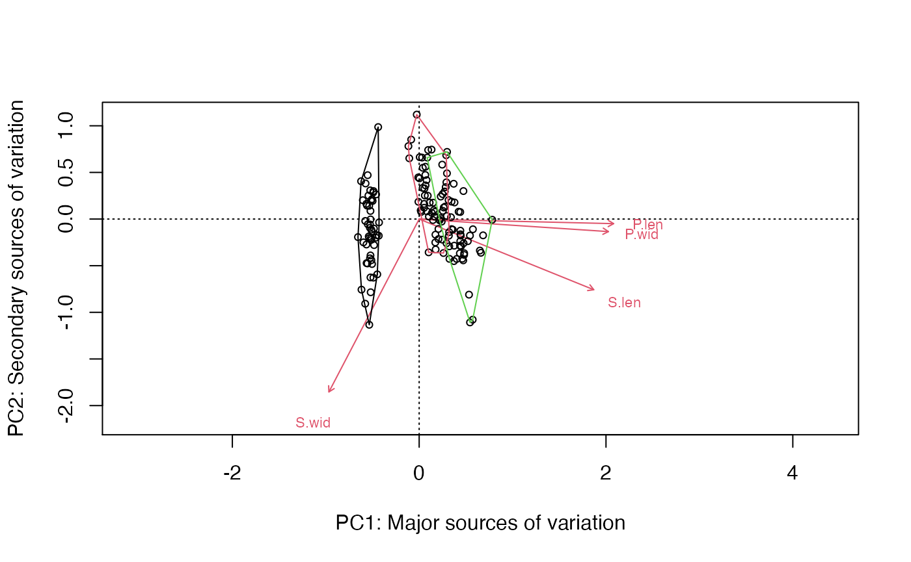
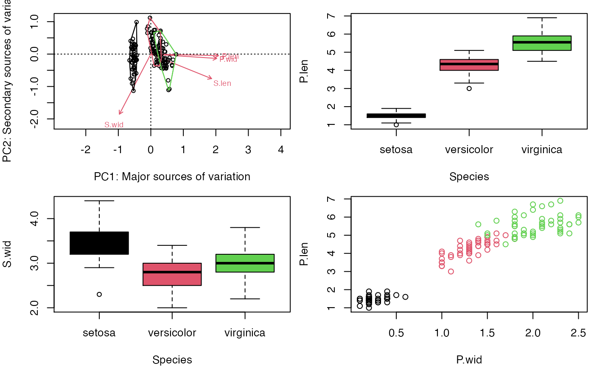
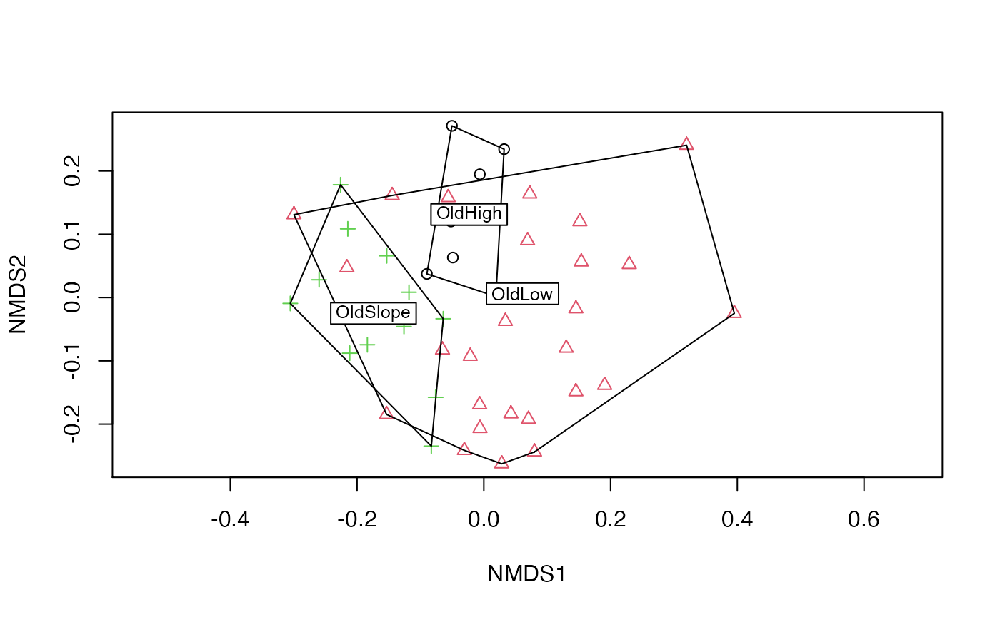

multivar_INTRO-high_dimensional_data_in_biology-iris_BCI_etc.Rmd
library(compbio4all)Morphology: numeric data
summary(iris$Species)
#> setosa versicolor virginica
#> 50 50 504 morphological measurements; each is a dimenion of data
summary(iris[,-5])
#> Sepal.Length Sepal.Width Petal.Length Petal.Width
#> Min. :4.300 Min. :2.000 Min. :1.000 Min. :0.100
#> 1st Qu.:5.100 1st Qu.:2.800 1st Qu.:1.600 1st Qu.:0.300
#> Median :5.800 Median :3.000 Median :4.350 Median :1.300
#> Mean :5.843 Mean :3.057 Mean :3.758 Mean :1.199
#> 3rd Qu.:6.400 3rd Qu.:3.300 3rd Qu.:5.100 3rd Qu.:1.800
#> Max. :7.900 Max. :4.400 Max. :6.900 Max. :2.500
names(iris) <- gsub("Sepal","S",names(iris))
names(iris) <- gsub("Petal","P",names(iris))
names(iris) <- gsub("Length","len",names(iris))
names(iris) <- gsub("Width","wid",names(iris))
par(mfrow = c(1,1))
# PC doesn't like categorical variables
iris.pca <- vegan::rda(iris[,-5], scale = TRUE)
biplot(iris.pca,
display = c("sites",
"species"),
type = c("text",
"points"),
xlab = "PC1: Major sources of variation",
ylab = "PC2: Secondary sources of variation")
ordihull(iris.pca,
group = iris$Species,
col = c(1,2,3))
par(mfrow = c(2,2), mar = c(4,4,1,0.5))
biplot(iris.pca,
display = c("sites",
"species"),
type = c("text",
"points"),
xlab = "PC1: Major sources of variation",
ylab = "PC2: Secondary sources of variation")
ordihull(iris.pca,
group = iris$Species,
col = c(1,2,3))
ordihull(iris.pca,
group = iris$Species,
col = c(1,2,3))
boxplot(P.len ~ Species,
data = iris,
col = c(1,2,3))
boxplot(S.wid ~ Species,
data = iris,
col = c(1,2,3))
plot(P.len ~ P.wid, data = iris, col = as.numeric(iris$Species))
# you should be familiar with all of this code
# 50 plots
nrow(BCI)
#> [1] 50
# 225 different species
ncol(BCI)
#> [1] 225
head(BCI)[5:10]
#> Adelia.triloba Aegiphila.panamensis Alchornea.costaricensis
#> 1 0 0 2
#> 2 0 0 1
#> 3 0 0 2
#> 4 3 0 18
#> 5 1 1 3
#> 6 0 0 2
#> Alchornea.latifolia Alibertia.edulis Allophylus.psilospermus
#> 1 0 0 0
#> 2 0 0 0
#> 3 0 0 0
#> 4 0 0 0
#> 5 0 0 1
#> 6 1 0 0
# 3 major habitat types
summary(BCI.env$Habitat)
#> OldHigh OldLow OldSlope Swamp Young
#> 8 26 12 2 2Set minor habitats to NA
# you should be able to understand what this code is doing
BCI.env$Habitat[grep("Swamp",BCI.env$Habitat)] <- NA
BCI.env$Habitat[grep("Young",BCI.env$Habitat)] <- NA#> Square root transformation
#> Wisconsin double standardization
#> Run 0 stress 0.2539738
#> Run 1 stress 0.2548067
#> Run 2 stress 0.2569324
#> Run 3 stress 0.2551671
#> Run 4 stress 0.2536839
#> ... New best solution
#> ... Procrustes: rmse 0.01301504 max resid 0.06055694
#> Run 5 stress 0.2553062
#> Run 6 stress 0.2590579
#> Run 7 stress 0.2545266
#> Run 8 stress 0.2588236
#> Run 9 stress 0.2545087
#> Run 10 stress 0.2545265
#> Run 11 stress 0.2542583
#> Run 12 stress 0.2545264
#> Run 13 stress 0.2862591
#> Run 14 stress 0.2551406
#> Run 15 stress 0.2568008
#> Run 16 stress 0.2754256
#> Run 17 stress 0.2574072
#> Run 18 stress 0.2536839
#> ... New best solution
#> ... Procrustes: rmse 0.0001097838 max resid 0.0004919809
#> ... Similar to previous best
#> Run 19 stress 0.2864691
#> Run 20 stress 0.2537065
#> ... Procrustes: rmse 0.0005584236 max resid 0.00307537
#> ... Similar to previous best
#> *** Solution reached
#> Loading required package: ape
#>
#> Attaching package: 'phangorn'
#> The following objects are masked from 'package:vegan':
#>
#> diversity, treedistEach loci in an alignment is a dimension
DNA.dat[,1:10]
#> [,1] [,2] [,3] [,4] [,5] [,6] [,7] [,8] [,9] [,10]
#> [1,] "G" "A" "A" "A" "C" "C" "G" "G" "G" "C"
#> [2,] "T" "A" "T" "A" "C" "C" "G" "T" "G" "C"
#> [3,] "T" "A" "T" "A" "C" "C" "G" "G" "G" "A"
#> [4,] "A" "A" "A" "A" "C" "C" "G" "G" "G" "C"Clustering methods can summarize sequences as phylogenetic tree
d_hamming <- dist.hamming(Laurasiatherian)
tree <- upgma(d_hamming)
plot(tree)